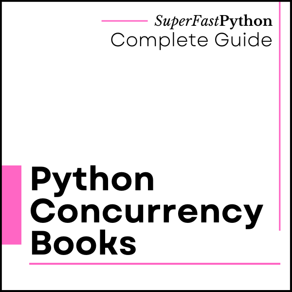
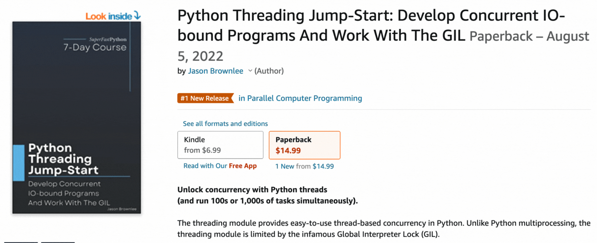

Python Concurrency Books
Python Concurrency Books
Python provides thread-based concurrency in the threading module, as well as process-based concurrency in the multiprocessing module and coroutine-based concurrency in the asyncio module.
Choosing the right type of concurrency is tricky and this guide may help.
Books provide an affordable and effective approach to learning Python concurrency at your own pace.
This page provides a complete and up-to-date list of all books that cover Python concurrency, as well as helpful books on related topics. I own a copy or have digital access to all of the books listed.
All books are linked on Amazon. When you buy a book through my links, I may earn a commission.
If you know of a book to add to this page, please let me know.

Best Python Concurrency Books
There are a number of books on Python concurrency, although this section focuses on a small subset that I recommend.
In short, they are:
- High Performance Python
- Using Asyncio in Python
- Python Concurrency with asyncio
- Effective Python
- Python Cookbook
- Python in a Nutshell
Let's take a closer look at each in turn.
High Performance Python
This is perhaps the best book on high-performance Python that has excellent chapters on Python concurrency.
- Title: High Performance Python
- Subtitle: Practical Performant Programming for Humans
- Authors: Ian Ozsvald and Micha Gorelick
- Year: 2020
- Pages: 468 pages


This is the second edition of the book, the first was published in 2014.
It is all about making Python code run faster, with a focus on CPU-bound tasks.
While this book is primarily aimed at people with CPU-bound problems, we also look at data transfer and memory-bound solutions. Typically, these problems are faced by scientists, engineers, quants, and academics.
It is published by O'Reilly and is probably the current definitive book on high-performance Python for intermediate developers.
This book is meant for intermediate to advanced Python programmers. Motivated novice Python programmers may be able to follow along as well, but we recommend having a solid Python foundation.
See below for a photo of me holding the book. Notice all the yellow stick tabs I've added to my copy of the book.
This is not a book dedicated to Python concurrency, but there are two chapters that I recommend, they are:
- Chapter 8: Asynchronous I/O
- Chapter 9: The multiprocessing Module
The detailed contents of Chapter 8 is as follows:
- Chapter 8: Asynchronous I/O
- Introduction to Asynchronous Programming
- How Does async/await Work?
- Serial Crawler
- Gevent
- tornado
- aiohttp
- Shared CPU–I/O Workload
- Serial
- Batched Results
- Full Async
- Wrap-Up
The detailed contents of Chapter 9 is as follows:
- Chapter 9: The multiprocessing Module
- An Overview of the multiprocessing Module
- Estimating Pi Using the Monte Carlo Method
- Estimating Pi Using Processes and Threads
- Using Python Objects
- Replacing multiprocessing with Joblib
- Random Numbers in Parallel Systems
- Using numpy
- Finding Prime Numbers
- Queues of Work
- Verifying Primes Using Interprocess Communication
- Serial Solution
- Naive Pool Solution
- A Less Naive Pool Solution
- Using Manager.Value as a Flag
- Using Redis as a Flag
- Using RawValue as a Flag
- Using mmap as a Flag
- Using mmap as a Flag Redux
- Sharing numpy Data with multiprocessing
- Synchronizing File and Variable Access
- File Locking
- Locking a Value
- Wrap-Up
The code for the book is available on GitHub here:
Grab a copy of High Performance Python.
Using Asyncio in Python
This might have been the first book on asyncio. It is short, but effective at getting you up to speed with this relatively new approach to concurrency in Python.
- Title: Using Asyncio in Python
- Subtitle: Understanding Python's Asynchronous Programming Features
- Author: Caleb Hattingh
- Year: 2020
- Pages: 163 pages


This too is a second edition, the first edition was published in 2018.
It is another O'Reilly book, but at 163 pages, I would not call it the definitive book on the topic.
This book is laser-focused on getting you up-to-speed on asyncio and where you might be able to use it in your projects.
The new Asyncio features are not going to radically change the way you write programs. They provide specific tools that make sense only for specific situations; but in the right situations, asyncio is exceptionally useful. In this book, we’re going to explore those situations and how you can best approach them by using the new Asyncio features.
A helpful summary of the table of contents is as follows:
- Chapter 1: Introducing Asyncio
- Chapter 2: The Truth About Threads
- Chapter 3: Asyncio Walk-Through
- Chapter 4: 20 Asyncio Libraries You Aren't Using (But... Oh, Never Mind)
- Chapter 5: Concluding Thoughts
- Appendix A: A Short History of Async Support in Python
- Appendix B: Supplementary Material
The (unofficial?) code examples from the book are available on GitHub here:
Grab a copy of Using Asyncio in Python.
Python Concurrency with asyncio
This is a newer and perhaps more complete treatment of asyncio published by Manning.
- Title: Python Concurrency with asyncio
- Author: Matt Fowler
- Year: 2022
- Pages: 376 pages


I like the modern crop of Manning technical books, and this book is no exception.
The new asyncio module is challenging to understand. This book is focused on helping newer Python developers get started with asyncio.
My motivation for writing this book was to fill this gap that exists in the Python landscape on the topic of concurrency, specifically with asyncio and single-threaded concurrency. I wanted to make the complex and under-documented topic of single-threaded concurrency more accessible to developers of all skill levels.
I like that it it has many different types of worked examples, see the table of contents to see what I mean:
- Chapter 1: Getting to know asyncio
- Chapter 2: asyncio basics
- Chapter 3: A first asyncio application
- Chapter 4: Concurrent web requests
- Chapter 5: Non-blocking database drivers
- Chapter 6: Handling CPU-bound work
- Chapter 7: Handling blocking work with threads
- Chapter 8: Streams
- Chapter 9: Web applications
- Chapter 10: Microservices
- Chapter 11: Synchronization
- Chapter 12: Asynchronous queues
- Chapter 13: Managing subprocesses
- Chapter 14: Advanced asyncio
The code examples are available on GitHub here:
Grab a copy of Python Concurrency with asyncio.
Effective Python
I think this might be the best Python recipe book out there. I love this book and it has an excellent chapter on concurrency.
- Title: Effective Python
- Subtitle: 90 Specific Ways to Write Better Python
- Author: Brett Slatkin
- Year: 2019
- Pages: 480 pages


This is the second edition of the book, the first was published in 2015.
The book is published by Addison-Wesley and is no joke.
The examples are useful, effective, and impressive. It's the must-read book for developers coming to Python from other languages to learn the pythonic way of doing things.
This book provides insight into the Pythonic way of writing programs: the best way to use Python. It builds on a fundamental understanding of the language that I assume you already have. Novice programmers will learn the best practices of Python’s capabilities. Experienced programmers will learn how to embrace the strangeness of a new tool with confidence.
I recommend Chapter 7, which contains 13 recipes on multithreading and multiprocessing, as follows:
- Chapter 7: Concurrency and Parallelism
- Item 52: Use subprocess to Manage Child Processes
- Item 53: Use Threads for Blocking I/O, Avoid for Parallelism
- Item 54: Use Lock to Prevent Data Races in Threads
- Item 55: Use Queue to Coordinate Work Between Threads
- Item 56: Know How to Recognize When Concurrency Is Necessary
- Item 57: Avoid Creating New Thread Instances for On-demand Fan-out
- Item 58: Understand How Using Queue for Concurrency Requires Refactoring
- Item 59: Consider ThreadPoolExecutor When Threads Are Necessary for Concurrency
- Item 60: Achieve Highly Concurrent I/O with Coroutines
- Item 61: Know How to Port Threaded I/O to asyncio
- Item 62: Mix Threads and Coroutines to Ease the Transition to asyncio
- Item 63: Avoid Blocking the asyncio Event Loop to Maximize Responsiveness
- Item 64: Consider concurrent.futures for True Parallelism
See below for a copy of me holding my copy of the book.
The code examples from the book are available on GitHub here:
The book has an official homepage (respect!) here:
Grab a copy of Effective Python.
Python Cookbook
This is an old book now, but is a classic and written by a master of Python concurrency, David Beazley.
- Title: Python Cookbook
- Subtitle: Recipes for Mastering Python 3
- Authors: David Beazley and Brian Jones
- Year: 2013
- Pages: 704 pages


This is the third edition of the book and it is published by O'Reilly.
It is the definitive Python cookbook, showing you the pythonic way to solve common programming tasks.
This book is aimed at more experienced Python programmers who are looking to deepen their understanding of the language and modern programming idioms. Much of the material focuses on some of the more advanced techniques used by libraries, frameworks, and applications.
I recommend Chapter 12: Concurrency.
Python has long supported different approaches to concurrent programming, including programming with threads, launching subprocesses, and various tricks involving generator functions. In this chapter, recipes related to various aspects of concurrent programming are presented, including common thread programming techniques and approaches for parallel processing.
This chapter has help 14 recipes on multithreading and multiprocessing:
- Section 12.1. Starting and Stopping Threads
- Section 12.2. Determining If a Thread Has Started
- Section 12.3. Communicating Between Threads
- Section 12.4. Locking Critical Sections
- Section 12.5. Locking with Deadlock Avoidance
- Section 12.6. Storing Thread-Specific State
- Section 12.7. Creating a Thread Pool
- Section 12.8. Performing Simple Parallel Programming
- Section 12.9. Dealing with the GIL (and How to Stop Worrying About It)
- Section 12.10. Defining an Actor Task
- Section 12.11. Implementing Publish/Subscribe Messaging
- Section 12.12. Using Generators As an Alternative to Threads
- Section 12.13. Polling Multiple Thread Queues
- Section 12.14. Launching a Daemon Process on Unix
The code examples for the book are available on GitHub here:
Grab a copy of Python Cookbook.
Python in a Nutshell
This is another excellent book that covers the book broadly and provides a chapter on multithreading and multiprocessing.
- Title: Python in a Nutshell
- Subtitle: The Definitive Reference
- Authors: Alex Martelli, Anna Martelli Ravenscroft, and Steve Holden
- Year: 2017
- Pages: 772


This is the third edition of the book. The first edition was published in 2003 and the second edition was published in 2006. It looks like a forth edition is on its way.
This book aims to be be the definitive quick-reference to the language, as stated by the subtitle.
The book is a quick reference to Python itself, the most commonly used parts of its vast standard library, and a few of the most popular and useful third- party modules and packages
I recommend the chapters:
- Chapter 14: Threads and Processes
- Chapter 18: Asynchronous Alternatives
The contents of Chapter 14 is as follows:
- Chapter 14: Threads and Processes
- Threads in Python
- The threading Module
- The queue Module
- The multiprocessing Module
- The concurrent.futures Module
- Threaded Program Architecture
- Process Environment
- Running Other Programs
- The mmap Module
The contents of Chapter 18 is as follows:
- Chapter 18: Asynchronous Alternatives
- Coroutine-Based Async Architectures
- The asyncio Module (v3 Only)
- The selectors Module
The source code examples are available on GitLab here:
Grab a copy of Python in a Nutshell.
More Python Concurrency Books
There are also many books from Packt publishing that cover Python concurrency.
They include:
- Advanced Python Programming
- Python Parallel Programming Cookbook
- Learning Concurrency in Python
- Parallel Programming with Python
- Mastering Concurrency in Python
- Python High Performance
- Distributed Computing with Python
Let's take a closer look at each in turn.
Advanced Python Programming
This is a general book on the topic of advanced Python programming that has many chapters on Python concurrency.
- Title: Advanced Python Programming
- Subtitle: Accelerate your Python programs using proven techniques and design patterns,
- Author: Quan Nguyen
- Year: 2022
- Pages: 606 pages


This is the second edition of the book, the first edition was published in 2019.
It is really a book on Python concurrency dressed up to be more general. The preface says as much, drawing the content on Python concurrency from "Mastering Concurrency in Python".
This Learning Path shows you how to leverage the power of both native and third-party Python libraries for building robust and responsive applications. You will learn about profilers and reactive programming, concurrency and parallelism, as well as tools for making your apps quick and efficient.
I prefer this book over the latter given it is newer and it has more content, making it better value for money.
Perhaps the most relevant chapters are:
- Chapter 7: Implementing Concurrency
- Chapter 8: Parallel Processing
- Chapter 9: Concurrent Web Requests
- Chapter 10: Concurrent Image Processing
- Chapter 11: Building Communication Channels with asyncio
- Chapter 12: Deadlocks
- Chapter 13: Starvation
- Chapter 14: Race Conditions
- Chapter 15: The Global Interpreter Lock
The source code examples for the book are available on GitHub from:
Grab a copy of Advanced Python Programming.
Python Parallel Programming Cookbook
This book provides more than 70 recipes on multithreading, multiprocessing, and distributed computing in Python.
- Title: Python Parallel Programming Cookbook
- Subtitle: Over 70 recipes to solve challenges in multithreading and distributed system with Python 3
- Author: Giancarlo Zaccone
- Year: 2015
- Pages: 286 pages


This is the second edition of the book, the first edition was published in 2015.
I like the broadness of this book, from threads, to processes, to distributed computing to GPUs.
Parallel computing, in fact, represents the simultaneous use of multiple computing resources to solve a processing problem, so that it can be executed on multiple CPUs, breaking a problem into discrete parts that can be processed simultaneously, where each is further divided into a series of instructions that can be executed serially on different CPUs.
The recipes are organised into nine chapters, they are:
- Chapter 1: Getting Started with Parallel Computing and Python
- Chapter 2: Thread-Based Parallelism
- Chapter 3: Process-Based Parallelism
- Chapter 4: Message Passing
- Chapter 5: Asynchronous Programming
- Chapter 6: Distributed Python
- Chapter 7: Cloud Computing
- Chapter 8: Heterogeneous Computing
- Chapter 9: Debugging and Testing
I specifically recommend chapter 2, 3, and 5.
The code examples used in the book are available on GitHub:
Grab a copy of Python Parallel Programming Cookbook.
Learning Concurrency in Python
This book provides good coverage of the standard libraries as well as related third-part libraries.
- Title: Learning Concurrency in Python
- Subtitle: Build highly efficient, robust, and concurrent applications
- Author: Elliot Forbes
- Year: 2017
- Pages: 360 pages


Again, I like the broad nature of the examples in this book. It covers a wide range of libraries.
Throughout this book, you will learn to build highly efficient, robust, and concurrent applications. You will work through practical examples that will help you address the challenges of writing concurrent code, and also you will learn to improve the overall speed of execution in multiprocessor and multicore systems and keep them highly available.
The table of contents for this book is as follows:
- Chapter 1: Speed It Up!
- Chapter 2: Parallelize It
- Chapter 3: Life of a Thread
- Chapter 4: Synchronization between Threads
- Chapter 5: Communication between Threads
- Chapter 6: Debug and Benchmark
- Chapter 7: Executors and Pools
- Chapter 8: Multiprocessing
- Chapter 9: Event-Driven Programming
- Chapter 10: Reactive Programming
- Chapter 11: Using the GPU
- Chapter 12: Choosing a Solution
The source code examples from the book are available on GitHub here:
Grab a copy of Learning Concurrency in Python.
Parallel Programming with Python
This is a short and older book with some good content.
- Title: Parallel Programming with Python
- Subtitle: Develop efficient parallel systems using the robust Python environment
- Author: Jan Palach
- Year: 2014
- Pages: 124 pages


This is a so called "mini-book", like a crash course on parallel programming with Python. It may be a bit dated by now. Nevertheless, it has good good examples if you can pick-up a cheap copy.
The first part of this work is to outline its topics. It is not easy to please everybody;
however, I believe I have achieved a good balance in the topics proposed in this mini book, in which I intended to introduce Python parallel programming combining theory and practice.
The table of contents for this book is as follows:
- Chapter 1: Contextualizing Parallel, Concurrent, and Distributed Programming
- Chapter 2: Designing Parallel Algorithms
- Chapter 3: Identifying a Parallelizable Problem
- Chapter 4: Using the threading and concurrent.futures Modules
- Chapter 5: Using Multiprocessing and ProcessPoolExecutor
- Chapter 6: Utilizing Parallel Python
- Chapter 7: Distributing Tasks with Celery
- Chapter 8: Doing Things Asynchronously
The source code for the examples in this book are available on GitHub here:
Grab a copy of Parallel Programming with Python.
Mastering Concurrency in Python
This book focuses on Python concurrency and covers the topic well.
- Title: Mastering Concurrency in Python
- Subtitle: Create faster programs using concurrency, asynchronous, multithreading, and parallel programming
- Author: Quan Nguyen
- Year: 2018
- Pages: 446 pages


This might be the best book on Python concurrency from Packt publish, if not the most complete when focused on the standard library.
We will tackle complex concurrency concepts and models via hands-on and engaging code examples. Having read this book, you will have gained a deep understanding of the principal components in the Python concurrency ecosystem, as well as a practical appreciation of different approaches to a real-life concurrency problem.
The table of contents of this book is as follows:
- Chapter 1: Advanced Introduction to Concurrent and Parallel Programming
- Chapter 2: Amdahl's Law
- Chapter 3: Working with Threads in Python
- Chapter 4: Using the with Statement in Threads
- Chapter 5: Concurrent Web Requests
- Chapter 6: Working with Processes in Python
- Chapter 7: Reduction Operators in Processes
- Chapter 8: Concurrent Image Processing
- Chapter 9: Introduction to Asynchronous Programming
- Chapter 10: Implementing Asynchronous Programming in Python
- Chapter 11: Building Communication Channels with asyncio
- Chapter 12: Deadlocks
- Chapter 13: Starvation
- Chapter 14: Race Conditions
- Chapter 15: The Global Interpreter Lock
- Chapter 16: Designing Lock-Based and Mutex-Free Concurrent Data Structures
- Chapter 17: Memory Models and Operations on Atomic Types
- Chapter 18: Building a Server from Scratch
- Chapter 19: Testing, Debugging, and Scheduling Concurrent
The code examples for the book are available on GitHub here:
Grab a copy of Mastering Concurrency in Python.
Python High Performance
This book focuses on high-performance computing with Python, but does provide a useful chapter on concurrency.
- Title: Python High Performance
- Subtitle: Build high-performing, concurrent, and distributed applications
- Author: Gabriele Lanaro
- Year: 2017
- Pages: 270 pages


This is the second edition of the book, the first edition was published in 2013.
This is a broader book on high-performance Python, and does provide a reasonable introduction to the topic.
This book will appeal to a broad audience as it covers both the optimization of numerical and scientific codes as well as strategies to improve the response times of web services and applications. The book can be read cover-to-cover ; however, chapters are designed to be self-contained so that you can skip to a section of interest if you are already familiar with the previous topics.
The relevant parts of table of contents for the book is as follows:
- Chapter 6: Implementing Concurrency
- Chapter 7: Parallel Processing
- Chapter 8: Distributed Processing
The code examples from the book are available on GitHub here:
Grab a copy of Python High Performance.
Distributed Computing with Python
This book focuses on distributed computing, but does have helpful material on Python concurrency.
- Title: Distributed Computing with Python
- Subtitle: Harness the power of multiple computers using Python through this fast-paced informative guide
- Author: Francesco Pierfederici
- Year: 2016
- Pages: 170 pages


I like the focus on Python concurrency through the lens of distributed computing, different to practically all the other books we've looked at so far.
This book is a very practical guide for Python programmers who are starting to build their own distributed systems. It starts off by illustrating the bare minimum theoretical concepts needed to understand parallel and distributed computing in order to lay the basic foundations required for the rest of the (more practical) chapters.
The table of contents is as follows:
- Chapter 1: An Introduction to Parallel and Distributed Computing
- Chapter 2: Asynchronous Programming
- Chapter 3: Parallelism in Python
- Chapter 4: Distributed Applications – with Celery
- Chapter 5: Python in the Cloud
- Chapter 6: Python on an HPC Cluster
- Chapter 7: Testing and Debugging Distributed Applications
- Chapter 8: The Road Ahead
Grab a copy of Distributed Computing with Python.
Best General Concurrency Books
This section lists more general books on the topic of concurrency such as advanced books aimed at senior developers and textbooks aimed at students.
There are many books on concurrency specifically or on operating systems that cover concurrency.
The short-list of general concurrency books that I recommend are:
- An Introduction to Parallel Programming
- The Art of Multiprocessor Programming
- The Little Book of Semaphores
- The Art of Concurrency
Know of an excellent general concurrency book? Please let me know.
Let's take a brief look at each in turn.
An Introduction to Parallel Programming
- Title: An Introduction to Parallel Programming
- Authors: Peter Pacheco and Matthew Malensek
- Year: 2020
- Pages: 496 pages


This book was written as a textbook for a collage-level course on broader topic of parallel programming.
It provides an introduction to writing parallel programs using MPI, Pthreads, OpenMP, and CUDA, four of the most widely used APIs for parallel programming. The intended audience is students and professionals who need to write parallel pro- grams. The prerequisites are minimal: a college-level course in mathematics and the ability to write serial programs in C.
The table of contents for this book is as follows:
- Chapter 1: Why Parallel Computing
- Chapter 2: Parallel Hardware and Parallel Software
- Chapter 3: Distributed Memory Programming with MPI
- Chapter 4: Shared-Memory Programming with Pthreads
- Chapter 5: Shared-Memory Programming with OpenMP
- Chapter 6: GPU Programming with CUDA
- Chapter 7: Parallel Program Development
- Chapter 8: Where To Go From Here
The book has a companion website providing downloads of source code, slides, and figures here:
Grab a copy of An Introduction to Parallel Programming.
The Art of Multiprocessor Programming
- Title: The Art of Multiprocessor Programming
- Author: Maurice Herlihy
- Year: 2020
- Pages: 576 pages


Like the previous book, this book was written as a textbook for collage-level courses, in this case with the focus shifted from parallel programming to multiprocessor programming, e.g. restricted to one system.
In the decade since the first edition, this book has become a staple of undergraduate and graduate courses at universities around the world. It has also found a home on the bookshelves of practitioners at companies large and small. The audience for the book has, in turn, advanced the state of the art in multiprocessor programming.
The table of contents for this book is as follows:
- Chapter 1: Introduction
- Part 1: Principles
- Chapter 2: Multiple Exclusion
- Chapter 3: Concurrent Objects
- Chapter 4: Foundations of Shared Memory
- Chapter 5: The Relative Power of Primitive Synchronization Operations
- Chapter 6: Universality of Consensus
- Part 2: Practice
- Chapter 7: Spin Locks and Contention
- Chapter 8: Monitors and Blocking Synchronization
- Chapter 9: Linked Lists: The Role of Locking
- Chapter 10: Queues, Memory Management, and the ABA Problem
- Chapter 11: Stacks and Elimination
- Chapter 12: Counting, Sorting, and Distributed Coordination
- Chapter 13: Concurrent Hashing and Natural Parallelism
- Chapter 14: Skiplists and Balanced Search
- Chapter 15: Priority Queues
- Chapter 16: Scheduling and Work Distribution
- Chapter 17: Data Parallelism
- Chapter 18: Barriers
- Chapter 19: Optimism and Manual Memory Management
- Chapter 20: Transactional Programming
- Appendix A: Software Basics
- Appendix B: Hardware Basics
Grab a copy of The Art of Multiprocessor Programming.
The Little Book of Semaphores
- Title: The Little Book of Semaphores
- Subtitle: The Ins and Outs of Concurrency Control and Common Mistakes
- Author: Allen Downey
- Year: 2009
- Pages: 294 pages


This book was written as a labor of love by the author and battle tested with many students across many universities by the author teaching the topic against early versions of the book.
It was written to allow students to practice generating solutions to concurrency problems, rather than memorizing existing solutions.
Given more time to absorb the material, students demonstrated a depth of understanding I had not seen before. More importantly, most of them were able to solve most of the puzzles. In some cases they reinvented classical solutions; in other cases they found creative new approaches.
The table of contents for this book is as follows:
- Chapter 1: Introduction
- Chapter 2: Semaphores
- Chapter 3: Basic Synchronization Patterns
- Chapter 4: Classical Synchronization Problems
- Chapter 5: Less Classical Synchronization Problems
- Chapter 6: Not-so-Classical Problems
- Chapter 7: Not Remotely Classical Problems
- Chapter 8: Synchronization in Python
- Chapter 9: Synchronization in C
- Appendix A: Cleaning up Python Threads
- Appendix B: Cleaning up POSIX Threads
The author also provides a free PDF version of the book on their website:
Grab a copy of The Little Book of Semaphores.
The Art of Concurrency
- Title: The Art of Concurrency
- Subtitle: A Thread Monkey's Guide to Writing Parallel Applications
- Author: Clay Breshears
- Year: 2009
- Pages: 304 pages


This book is designed to teach the tools of concurrency to programmers so they can start using them on their own projects, regardless of programming language.
In the past, parallel and concurrent programming was the domain of a very small set of programmers who were typically involved in scientific and technical computing arenas. From now on, concurrent programming is going to be mainstream. Parallel programming will eventually become synonymous with “programming.”
I love the glossary in this book for quickly getting a handle on terms. It inspired to write my own Python concurrency glossary.
The table of contents for this book is as follows:
- Chapter 1: Want to Go Faster? Raise Your Hands if You Want to Go Faster!
- Chapter 2: Concurrent or Not Concurrent?
- Chapter 3: Proving Correctness and Measuring Performance
- Chapter 4: Eight Simple Rules for Designing Multithreaded Applications
- Chapter 5: Threading Libraries
- Chapter 6: Parallel Sum and Prefix Scan
- Chapter 7: MapReduce
- Chapter 8: Sorting
- Chapter 9: Searching
- Chapter 10: Graph Algorithms
- Chapter 11: Threading Tools
Grab a copy of The Art of Concurrency.
Best Concurrency Books for Other Languages
Concurrency techniques are available for many programming languages, and sometimes the description of primitives and patterns in these other books are helpful.
This section lists some of the top books on concurrency for other programming languages, that I consult frequently.
- Java Concurrency in Practice, Brian Goetz, et al., 2006.
- Concurrent Programming in Java: Design Principles and Pattern, Doug Lea, 1999.
- Concurrency in Go: Tools and Techniques for Developers, Katherine Cox-Buday, 2017.
- Concurrency in C# Cookbook: Asynchronous, Parallel, and Multithreaded Programming, Stephen Cleary, 2019.
- C++ Concurrency in Action, Anthony Williams, 2019.
- Seven Concurrency Models in Seven Weeks: When Threads Unravel, Paul Butcher, 2014.
Common Questions
This section lists common questions about concurrency books.
Do you have a question about these books?
Let me know and I may add your question and my answer to this page.
What are the Best Python AsyncIO Books?
There are two excellent books dedicated to asyncio, they are:
- Using Asyncio in Python, Caleb Hattingh, 2020.
- Python Concurrency with asyncio, Matthew Fowler, 2022.
UPDATE: I wrote a book on Python asyncio that may help:
- Python Asyncio Jump-Start, Jason Brownlee, 2022.
In fact, it did really well:

What are the Best ThreadPoolExecutor and ProcessPoolExecutor Books?
There are no books dedicated to the ThreadPoolExecutor and the ProcessPoolExecutor.
Nevertheless, many books have a section or a chapter that covers Executors and these classes in particular.
UPDATE: I wrote a few books on Python executors that may help:
- Python ProcessPoolExecutor Jump-Start, Jason Brownlee, 2022.
- Python ThreadPoolExecutor Jump-Start, Jason Brownlee, 2022.
- Python Concurrent Futures Interview Questions, Jason Brownlee, 2022.
More generally, I would recommend:
- Effective Python, Brett Slatkin, 2019.
- See Chapter 7: Concurrency and Parallelism
- Python in a Nutshell, Alex Martelli, et al., 2017.
- See: Chapter: 14: Threads and Processes
What are the Best Python Threading Books?
There are no books dedicated to Python threading.
Nevertheless, all the books that cover Python concurrency generally cover threading.
UPDATE: I wrote a few books on Python threading that may help:
- Python Threading Jump-Start, Jason Brownlee, 2022.
- Python ThreadPool Jump-Start, Jason Brownlee, 2022.
- Python Threading Interview Questions, Jason Brownlee, 2022.
In fact, they did really well:

More generally, I would recommend:
- Python Cookbook, David Beazley and Brian Jones, 2013.
- See: Chapter 12: Concurrency
- Effective Python, Brett Slatkin, 2019.
- See: Chapter 7: Concurrency and Parallelism
- Python in a Nutshell, Alex Martelli, et al., 2017.
- See: Chapter: 14: Threads and Processes
What are the Best Python Multiprocessing Books?
There are no books dedicated to Python multiprocessing.
Nevertheless, all the books that cover Python concurrency generally cover multiprocessing.
UPDATE: I wrote a few books on Python multiprocessing that may help:
- Python Multiprocessing Jump-Start, Jason Brownlee, 2022.
- Python Multiprocessing Pool Jump-Start, Jason Brownlee, 2022.
- Python Multiprocessing Interview Questions, Jason Brownlee, 2022.
In fact, they did really well:

More generally, I would recommend:
- Effective Python, Brett Slatkin, 2019.
- See: Chapter 7: Concurrency and Parallelism
- High Performance Python, Ian Ozsvald and Micha Gorelick, 2020.
- See: Chapter 9: The multiprocessing Module
- Python in a Nutshell, Alex Martelli, et al., 2017.
- See: Chapter: 14: Threads and Processes